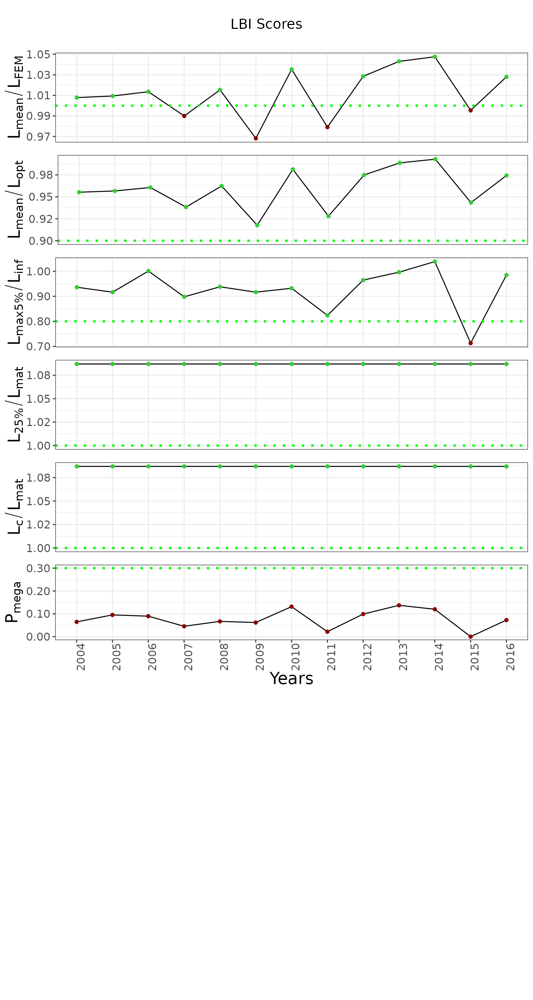

running-chartlbi
running-prettylbi.Rmd1. Installing chartlbi package
For this vigenette to work this package must be installed and exist in R’s default libpath. The commented lines below need to be uncommented the first time you either run the whole document or this cell.
# installed_packages <- rownames(installed.packages())
# if (!'chartlbi' %in% installed_packages) {
# devtools::install_github("https://github.com/d2gex/chartlbi", dep=TRUE)
# }
# Ensure knitr does run the vignette from the same folder as interactively
knitr::opts_knit$set(root.dir = dirname(getwd()))
library("chartlbi")2. Working Directory
This vigenette assumes that you are sitting on the root folder of
your project. In otherwise situations please do use setwd
as it suits you best.
3. Reading the sample data
Length-frequency and [weight-at-length] (https://github.com/ices-tools-dev/LBI_shiny/blob/master/data/walGad.csv) matrices for gadoids in this example are provided by ICES.
length_freq_matrix <- readRDS("vignettes/data/demersal_fish_sample.rds")
head(length_freq_matrix)
#> MeanLength X2004 X2005 X2006 X2007 X2008 X2009 X2010 X2011 X2012 X2013 X2014
#> 1 10.5 1 0 1 0 1 0 1 1 1 1 1
#> 2 11.5 1 0 1 0 1 0 1 1 1 1 1
#> 3 12.5 1 0 1 0 1 0 1 1 1 1 1
#> 4 13.5 1 0 1 0 26 0 1 1 1 1 1
#> 5 14.5 1 0 1 0 26 0 1 1 1 1 1
#> 6 15.5 0 0 1 0 26 1 1 1 1 1 1
#> X2015 X2016
#> 1 0 1
#> 2 0 1
#> 3 0 1
#> 4 0 1
#> 5 0 1
#> 6 0 1
# (1) Define biological inputs and size of class length
params <- AlgoParams$new()
params$binwidth <- 10
params$linf <- 49.1
params$l50 <- 23
# (2) Define the context used to graph the results. Default values provided at
# instantiation time.
stack_plot_context <- PlotContext$new()
# (3) Define the threshold over which the LBI indicators will be evaluated. Default values provided at instantiation time.
thresholds <- Thresholds$new()
# (5) Define indicator order you want them to be shown as
column_order <- list('Pmega','Lc_Lmat', 'L25_Lmat', 'Lmax5_Linf', 'Lmean_Lopt', 'Lmean_Lfem')
# (4) Run the LBI algorithm
lbi <- LbiAlgo$new(length_freq_matrix, params)
results <- lbi$run()
# (5) Plot the results
lbi_plotter <- OutputPlotter$new(results, stack_plot_context, thresholds)
graph <- lbi_plotter$build_plots(column_order)
graph